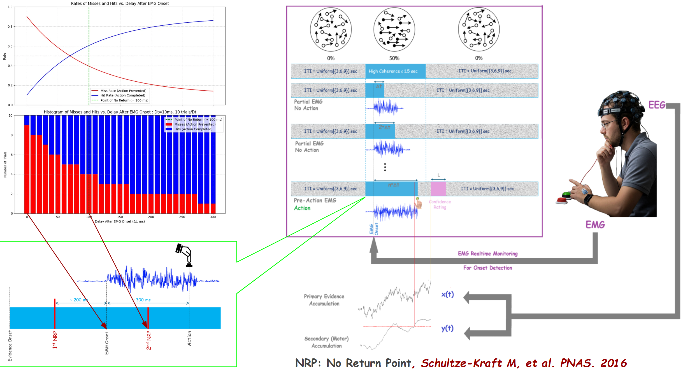

In Progress
Finding the "Point of No Return"
When is a decision truly committed? This hardware-optimized closed-loop BCI system investigates the critical threshold between decision initiation and irreversible commitment.

Research Question
When does a motor action become irreversible after initial motor preparation begins? Our experiment determines the exact timing of the "point of no return" in decision-making.
Methodology
Participants perform a dot-motion task while EMG activity is monitored. When muscle activity is detected, visual evidence changes after variable delays to test if actions can still be cancelled.
Technical Innovation
Hardware-synchronized parallel port timing ensures sub-millisecond precision, allowing us to pinpoint exactly when actions become committed.